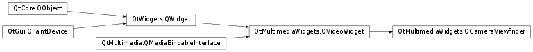

QCameraViewfinder¶
Detailed Description¶
The
PySide2.QtMultimediaWidgets.QCameraViewfinderclass provides a camera viewfinder widget.camera = new QCamera; viewfinder = new QCameraViewfinder(); viewfinder->show(); camera->setViewfinder(viewfinder); imageCapture = new QCameraImageCapture(camera); camera->setCaptureMode(QCamera::CaptureStillImage); camera->start();
-
class
PySide2.QtMultimediaWidgets.QCameraViewfinder([parent=nullptr])¶ Parameters: parent – PySide2.QtWidgets.QWidgetConstructs a new camera viewfinder widget.
The
parentis passed toQVideoWidget.
© 2018 The Qt Company Ltd. Documentation contributions included herein are the copyrights of their respective owners. The documentation provided herein is licensed under the terms of the GNU Free Documentation License version 1.3 as published by the Free Software Foundation. Qt and respective logos are trademarks of The Qt Company Ltd. in Finland and/or other countries worldwide. All other trademarks are property of their respective owners.